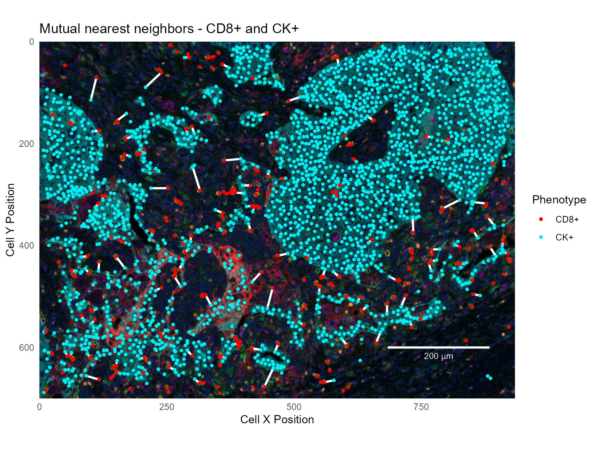

Computing inter-cellular distances
Kent Johnson
2019-10-22
computing_distances.Rmdphenoptr contains several functions which analyze and report on the spatial relationship between cells in a single field.
Nearest neighbor distances
Computing with find_nearest_distance
The find_nearest_distance function finds per-cell nearest neighbor distances. For each cell in a sample, it finds the nearest neighbor cell in each of the provided phenotypes and reports the cell ID and distance to the nearest neighbor cell. Results are returned in a tibble with a Distance to and Cell ID column per phenotype.
For example, the phenoptr sample data sample_cell_seg_data contains 5 unique phenotypes:
library(tidyverse)library(phenoptr)
csd <- sample_cell_seg_data
csd %>% count(Phenotype)# A tibble: 5 x 2
Phenotype n
<chr> <int>
1 CD68+ 417
2 CD8+ 228
3 CK+ 2257
4 FoxP3+ 228
5 other 2942The other cells are not of interest, so first filter them out.
csd <- csd %>% filter(Phenotype!='other')Calling find_nearest_distance on this file returns a tibble with two columns for each phenotype and one row for each cell. The Distance to <phenotype> columns give the distance to the nearest cell of the phenotype; the Cell ID <phenotype> columns identify the nearest cell.
distances <- find_nearest_distance(csd)
glimpse(distances)Observations: 3,130
Variables: 8
$ `Distance to CD68+` <dbl> 29.529646, 38.082148, 36.674242, 73.11976...
$ `Cell ID CD68+` <int> 108, 41, 262, 99, 217, 69, 236, 217, 262,...
$ `Distance to CD8+` <dbl> 18.03469, 64.37585, 67.57403, 91.44397, 3...
$ `Cell ID CD8+` <int> 101, 5068, 423, 189, 128, 188, 280, 128, ...
$ `Distance to CK+` <dbl> 36.830694, 109.317199, 3.605551, 4.031129...
$ `Cell ID CK+` <int> 192, 5127, 45, 58, 4943, 209, 636, 87, 30...
$ `Distance to FoxP3+` <dbl> 16.347783, 40.140379, 30.870698, 65.40833...
$ `Cell ID FoxP3+` <int> 117, 214, 229, 138, 229, 102, 66, 229, 22...nrow(csd)[1] 3130To create a combined data frame, use dplyr::bind_cols.
Note: The origin for cell positions in a cell seg data file may be the slide origin or the field origin, depending on the inForm version and the selected option. The field origin is the top-left corner of the field, so calling find_nearest_distance on a merged data file with field positions will compute incorrect values. One way to add distance columns to such a merged data file is to use dplyr::group_by to process each field separately. For example, if merged contains merged cell seg data with field positions, add distance columns with this code:
merged_with_distance <- merged %>%
group_by(`Sample Name`) %>%
do(bind_cols(., find_nearest_distance(.)))Analyzing nearest neighbor distances
Once the nearest neighbors have been computed per cell, standard aggregation, analysis and plotting commands can be used to examine the results. For example, find the mean nearest neighbor distances by phenotype:
csd_with_distance %>% group_by(Phenotype) %>%
select(Phenotype, starts_with('Distance to')) %>%
summarize_all(~round(mean(.), 1))# A tibble: 4 x 5
Phenotype `Distance to CD~ `Distance to CD~ `Distance to CK~
<chr> <dbl> <dbl> <dbl>
1 CD68+ 14.2 30.6 23.1
2 CD8+ 23.1 17.5 19.3
3 CK+ 44.3 48.2 7.9
4 FoxP3+ 19.1 29.1 23.3
# ... with 1 more variable: `Distance to FoxP3+` <dbl>Show the distribution of distances in a density plot:

Visualizing nearest neighbors
The Cell ID <phenotype> column allows visualizing nearest neighbors by joining the combined cell seg table with itself. For example, to show the nearest CK+ cell for each CD8+ cell, join the Cell ID CK+ field to the original Cell ID field. This example filters the data before joining.
# Filter to just CD8+ and CK+ cells
cd8_cells = csd_with_distance %>% filter(select_rows(csd_with_distance, 'CD8+'))
ck_cells = csd_with_distance %>% filter(select_rows(csd_with_distance, 'CK+'))
# For each CD8+ cell, join with the data for the nearest CK+ cell
cd8_to_ck = cd8_cells %>% left_join(ck_cells, by=c('Cell ID CK+'='Cell ID'),
suffix=c('', '.CK'))Show the CD8+ and CK+ cells with the nearest neighbors connected:
# Read a background image and make a base plot
background_path =
system.file("extdata/sample/Set4_1-6plex_[16142,55840]_composite_image.jpg", package='phenoptr')
background = jpeg::readJPEG(background_path) %>% as.raster()
xlim = c(0, 934)
ylim = c(0, 700)
base_plot = ggplot(mapping=aes(`Cell X Position`, `Cell Y Position`)) %>%
phenoptr:::add_scales_and_background(background, xlim, ylim, scale_color='white') +
labs(x='Cell X Position', y='Cell Y Position') +
scale_color_manual('Phenotype', values=c('CD8+'='red', 'CK+'='cyan2'))
# Add lines and points
base_plot + geom_segment(data=cd8_to_ck,
aes(xend=`Cell X Position.CK`, yend=`Cell Y Position.CK`),
color='white') +
geom_point(data=ck_cells, aes(color='CK+'), size=1) +
geom_point(data=cd8_cells, aes(color='CD8+'), size=1) +
labs(title='Nearest CK+ to each CD8+')
To show the nearest CD8+ for each CK+, join in the other direction; for each CK+ cell, find the nearest CD8+ cell:
ck_to_cd8 = ck_cells %>% left_join(cd8_cells, by=c('Cell ID CD8+'='Cell ID'),
suffix=c('', '.CD8'))
base_plot +
geom_segment(data=ck_to_cd8,
aes(xend=`Cell X Position.CD8`, yend=`Cell Y Position.CD8`),
color='white') +
geom_point(data=ck_cells, aes(color='CK+'), size=1) +
geom_point(data=cd8_cells, aes(color='CD8+'), size=1) +
labs(title='Nearest CD8+ to each CK+')
Mutual nearest neighbors
Mutual nearest neighbors are cells which have each other as nearest neighbors; i.e. cells where the nearest neighbor of the nearest neighbor is the starting cell:
mutual = ck_to_cd8 %>% filter(`Cell ID`==`Cell ID CK+.CD8`)This data set contains 126 mutual nearest neighbor pairs between CD8+ and CK+ cells.
base_plot +
geom_segment(data=mutual,
aes(xend=`Cell X Position.CD8`, yend=`Cell Y Position.CD8`),
size=1, color='white') +
geom_point(data=ck_cells, aes(color='CK+'), size=1) +
geom_point(data=cd8_cells, aes(color='CD8+'), size=1) +
labs(title='Mutual nearest neighbors - CD8+ and CK+')
Cells within a radius
Computing with count_within
The count_within function looks at the number of cells within a radius of another cell and returns summary measures. For example, use count_within to find the number of CD68+ cells having a CK+ cell within 25 microns:
count_within(csd, from='CD68+', to='CK+', radius=25)# A tibble: 1 x 5
radius from_count to_count from_with within_mean
<dbl> <int> <int> <int> <dbl>
1 25 417 2257 274 3.28In this result, from_count and to_count are the total numbers of eligible cells. They agree with the counts in the first table in this tutorial. from_with is the number of CD68+ cells having at least one CK+ cell within 25 micron. within_mean is the average number of CK+ cells found within 25 micron of each CD68+ cell.
Note there are some subtleties to count_within. Most importantly, it is not symmetric. In this example, the number of CK+ cells with a CD68+ within 25 microns is not the same as the number of CD68+ cells with a CK+ cell within 25 microns.
count_within(csd, from='CK+', to='CD68+', radius=25)# A tibble: 1 x 5
radius from_count to_count from_with within_mean
<dbl> <int> <int> <int> <dbl>
1 25 2257 417 664 0.606Please see help(count_within) for details.
Count multiple files or phenotypes using count_within_batch
You may want to run count_within on an entire directory of cell seg data files, or to count multiple combinations of phenotypes. Both of these are possible using count_within_batch. This function takes the path to a directory that contains multiple cell seg data files. The pairs and category parameters are lists and may contain multiple entries.
For example, the following commands will count FoxP3+ cells with a CD8+ or CK+ cell within 10 or 25 microns. Separate counts are returned for each to phenotype and for Tumor and Stroma tissue categories. Counts will be calculated for all cell_seg_data.txt files in my_directory.
base_path <- "/path/to/my_directory"
pairs <- list(c('FoxP3+', 'CD8+'),
c('FoxP3+', 'CK+'))
radii <- c(10, 25)
categories <- c('Stroma', 'Tumor')
count_within_batch(base_path, pairs, radii, categories)See help(count_within_batch) and the tutorial Selecting cells within a cell segmentation table for additional details.
Spatial distribution report
The spatial_distribution_report function is a bit different from the other functions mentioned in this tutorial. Rather than calculate and return distance metrics, it creates a report which shows visually the nearest neighbor relations between two phenotypes in a single field. Because the result is a stand-alone HTML file, it can’t easily be demonstrated in a tutorial. For an example, copy and paste this code into your own copy of R. It will create a sample report in your user directory.
This example requires the phenoptrExamples package, which includes extended sample data.
library(phenoptrExamples)
cell_seg_path = system.file("extdata", "samples",
"Set4_1-6plex_[16142,55840]_cell_seg_data.txt",
package = "phenoptrExamples")
pairs <- list(c('CD68+', 'CD8+'))
colors <- c('CD68+'='magenta', 'CD8+'='yellow')
out_path <- path.expand('~/spatial_distribution_report.html')
spatial_distribution_report(cell_seg_path, pairs, colors, output_path=out_path)To create reports for all cell seg data files in a directory, first define phenotypes and colors as above. Use list_cell_seg_files to find all the files. Then call spatial_distribution_report for each file. This will create reports in the same directory as the data files.
base_path <- '/path/to/data/'
paths <- list_cell_seg_files(base_path)
for (path in paths)
spatial_distribution_report(path, pairs, colors)